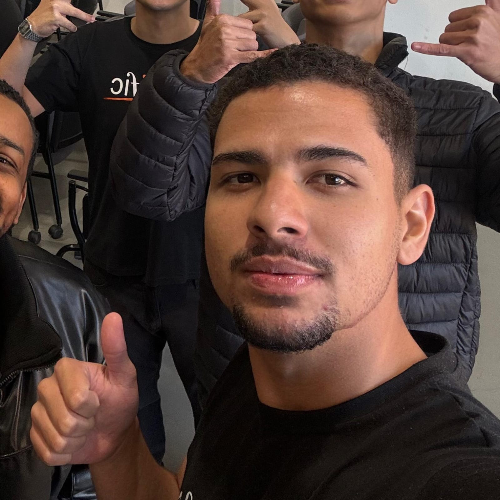

|  |
Rua Chalmers, 432 - 34000-204 | Nova Lima, Minas Geraisromani.joao1@gmail.comUC's já cursadas:
Gosto muito de ir na academia, treinar, mas com a correria do dia a dia, só consigo jogar um futebol no sábado de manhã. Além de cripto e tecnologia, também gosto do mercado digital e infoprodutos. Sou cruzeirense, mas sem muito apego, e tenho um carinho pelo Villa Nova de Nova Lima. No curso de ADS, tô curtindo aprender mais sobre a parte de dev, e to ansioso pra começar a ver principalmente a parte de jogos. Profissionalmente, quero continuar e crescer na área tech e alcançar empresas como Google, Meta ou grandes bancos. Meu Linkedin: Clique aqui Meu Instagram: Clique aqui |